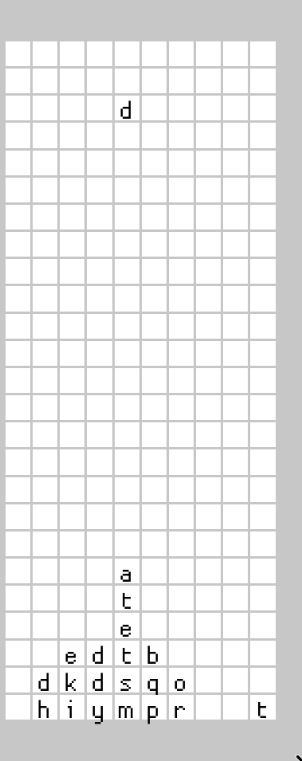

Vectors are faster than hash-maps for small collections
Recently, I was trying to program a mix between Tetris and Boggle as a programming exercise. The idea was that letters would fall from the sky, and you could clear them off the screen by maneuvering them to form words.
The game ended up being not much fun to play, but in the course of programming it, I found a vivid example of something I had been told before but never really internalized: Vectors can be faster than HashMaps when you only have to store a small number of keys / values.
This might seem surprising because it takes $O(n)$ time to find an entry in a Vector, but HashMap lookups take constant time. However, the big-O scaling of an algorithm dictates the how it’s runtime scales as the size of the input increases to infinity. This notation can obscure is the fact that for small inputs, the limiting behavior may not matter much, and an asymptotically-weaker data structure may outperform it’s better-scaling counterpart.
My Example: Tries for spelling
In my board game, I need to test whether dropping a tile into place allows you to spell any word using boggle rules. One does this by iterating over each tile on the board and performing a depth-first-search to look for possible words that can be spelled starting from the tile. We want to be able to terminate searches early; we don’t want to waste time searching for paths that start with “rpmyih” (the first row backwards), as we know that there is no English word that starts with these characters. The datastructure that allows you to do this is a Trie, which are classically used to implement spellcheckers, autocomplete, and other similar operations.

Briefly, a Trie is a recursive tree-like data data-structure which contains keys (the next possible letters in a word), and values (sub-tries that spell out the next possible characters that come after each key). The cost associated with looking up whether you can spell a word is determined in large part by how quickly you can look up these key-value pairs. Importantly, there can only ever be 26 different key-value pairs stored in each trie, as there are only 26 letters in the English language. This means that the asymptotic behavior of the datstructure we use to store the key-value pairs may not be relevant for optimizing performance, and we should test all alternatives against each other.